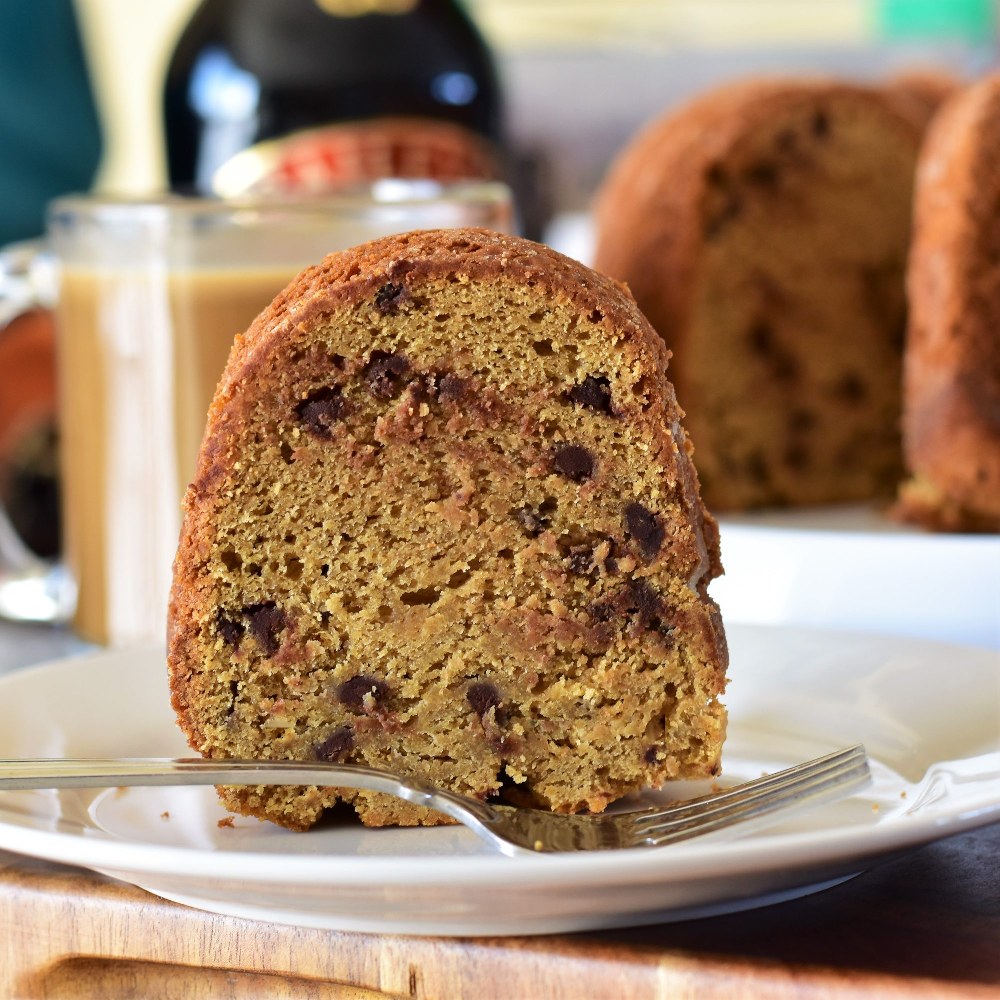

Coffee and Irish Cream Bundt® Cake

Description
One of my husband's favorite drink combos is Baileys® and coffee, so I decided to make the dynamic duo into a cake. It's delicious when served with some lightly sweetened whipped cream.
Ingredients
- ¼ cup strongly brewed coffee, cooled to room temperature
- 2 tablespoons instant espresso powder
- 2 ¾ cups all-purpose flour
- 2 teaspoons baking powder
- ¾ teaspoon salt
- 1 cup unsalted butter, softened
- 1 (8 ounce) package cream cheese, softened
- 1 cup white sugar
- 1 cup firmly packed brown sugar
- 3 large eggs, at room temperature
- 1 tablespoon vanilla extract
- 1 cup Irish cream liqueur (such as Baileys®)
- ¾ cup mini chocolate chips
Steps
- Preheat the oven to 350 degrees F (175 degrees C). Grease and flour a 10-cup Bundt® pan.
- Mix together coffee and espresso powder in a small bowl or measuring cup until dissolved. Set aside.
- Mix together flour, baking powder, and salt in a medium bowl until combined.
- Cream together butter, cream cheese, white sugar, and brown sugar in a large bowl until smooth and fluffy. Beat in eggs, 1 at a time, mixing well after each addition. Add coffee-espresso mixture and vanilla and mix until combined. Add 1/2 of the flour mixture and stir until just combined. Pour in Irish cream and mix until combined. Add remaining flour mixture and mix until just combined. Fold in mini chocolate chips.
- Pour batter evenly into the prepared pan. Tap pan gently on the counter a few times to disperse any air bubbles.
- Place pan into the preheated oven and bake until the top of the cake springs back lightly when touched, 55 to 60 minutes. Allow cake to cool for 15 minutes in the pan before removing to a wire rack to cool completely.